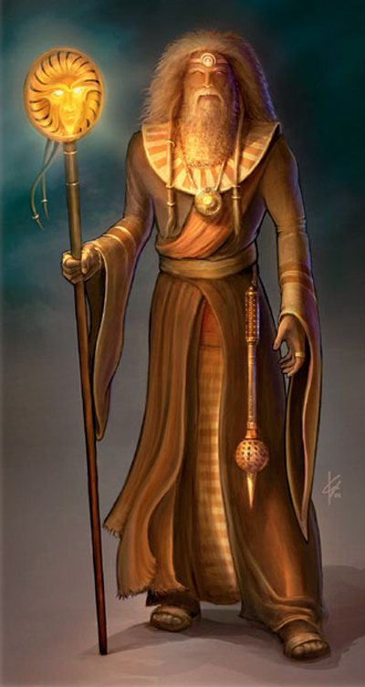
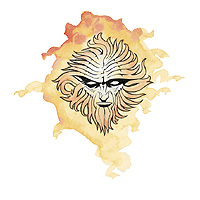

培罗（Pelor）

光明之神
伟大神力
圣徽：日之面

居住位面：Elysium
阵营：中立善良
神职：太阳，光明，力量，医疗
信徒：吟游诗人，巡林客，德鲁伊，医生，平民
牧师阵营：混乱善良，守序善良，中立善良
领域：善良，医疗，力量，太阳
偏好武器：硬头锤
太阳神培罗一般被描述为一位白衣，白发，白胡，持着一根闪着金光的木杖的老者。培罗是世上许多美好事物的创造者，使这些美好事物延续下去的支持者，以及所有邪恶的敌人。他是凡人们最广泛地崇拜对象，是下至平民，上至皇室的信仰，他的神职人员在世界各地都被善待。
教义
尽管他往往被认为是一位平和而文雅的，善于减轻而不是制造痛苦的神祗，但培罗依然有着许多不为人知的一面。他用他的愤怒去震慑黑暗与邪恶，他也鼓舞和帮助那些行善的人们。
培罗教导人们，生命之源是太阳。正是太阳的光明给弱者和伤者带来力量和健康，同时，它也能毁灭一且黑暗与邪恶。他力劝他的追随者们去积极地挑战腐败与罪恶的力量，不过，也要记住，如同闪耀的日光会刺瞎人们的双目，对那些负面因素的过度无情则会遮蔽住心灵，使心看不见生命中那些最美好的东西：善良，慈悲，和怜悯。
神职人员与神殿
培罗的牧师喜欢穿着黄色的祭袍。他们通常都是些内心坚毅勇敢，外表和蔼善良的人。他们大多都是和平与温馨的创造者，培育者和保护者，然而，在危机到来的时刻，培罗的牧师会毫不犹豫的拿起武器。他们利用自身的力量去医治伤痛，培育希望，当然，也会利用自己手中的武器去帮助任何需要他们帮助的人作战，去保护任何需要他们保护的人免除威胁。很多培罗的牧师离开了培育他们的神殿，前往遥远的彼方探索与开拓，当然，在那里，他们会驱除走任何邪恶的阴影，并将他们所侍奉的神的礼物散发给需要的人。
侍奉培罗的神殿往往高大，通风良好，并刷成眩目的白色。它们一般坐落于空旷之处，躲开高大的遮蔽物，以便每天让温暖的阳光能够进入神殿里的大多数房间。它们通常还有着宽阔的庭院。培罗的神殿通常非常地干净，可谓一尘不染，大部分的神殿的两侧都是医院。
培罗
牧师20级/德鲁伊10级/战士10级
中体型外界生物
神格等级：17
生命骰：20d8+180（外界生物）加20d8+180（牧师）加10d8+90（德鲁伊）加10d10+90（战士）（1040hp）
先攻调整值：+11（+7敏捷，+4精通先攻）
速度：60
防御等级：73（+7敏捷，+17神格等级，+30天生防御，+9偏转）
攻击加值：+5瓦解炽炎重型硬头锤 +79/+74/+69/+64近战；或者法术 +69近战接触或 +64远程接触，攻击检定自然掷骰结果总为20，掷骰结果按重击计算。
伤害加值：+5瓦解炽炎重型硬头锤 1d8+42/19-20；或者使用法术，总是取最大伤害值（硬头锤造成50点伤害）
占据/威胁范围：5尺*5尺/5尺
特殊攻击：每日24次驱散不死生物，领域神力，超凡神格能力，类法术能力
特性：神格免疫，伤害减免 52/+5，快速医疗 37，神术自发性施法，理解、交谈及阅读所有语言并直接于任何19里内的生命存在交谈，远程沟通，神祗国度，随意无误传送，随意位面旅行，自然智识，抵抗自然诱惑，无踪步，生物毒免疫，自然变形（小，中体型，或大体型，每日4次），穿林，SR49，神力光环（19里，DC36）
豁免调整值：坚韧 +58，反射 +56，意志 +64，豁免检定掷骰自然结果总是取20
能力值：力量 34，敏捷 24，体质 28，智力 32，感知 40，魅力 29
技能调整值：理解动物 +39，，专注 +85，手艺（玻璃工艺） +91，手艺（金属加工） +91，交涉 +57，驯养动物 +72，医疗 +70，方向感 +38，知识（奥术） +79，知识（自然） +69，知识（宗教） +62，知识（不死生物） +39，聆听 +60，表演 +49，专业（农夫） +95，专业（草药） +95，专业（水手） +95，骑术（马） +63，探知 +61，搜索 +51，察言观色 +55，辨识法术 +71，侦察 +60，野外求生 +55，技能检定掷骰自然结果总是取20
专长：顺势劈，格斗反射，神格威力，神格复仇，闪避，法术强效，专家，法术延时，额外驱散（*3），高级顺势劈，精通重击（重型硬头锤），精通先攻，机动，骑乘战斗，猛力攻击，法术远触，快速移动攻击，法术祝福，灵魂告戒，跳跃攻击，高级专家，武器专攻（重型硬头锤），武器专精（重型硬头锤），旋风攻击
神格免疫：属性伤害，属性吸取，酸，冷，即死效果，疾病，瓦解，电，能量吸取，心智影响效果，麻痹，毒，睡眠，震慑，变形，监禁，放逐。
超凡神格能力：改变现实，改变大小，区域神力护盾，天神下凡，召唤生物（各类的鹰），制造人工物品，创造高级物品，创造物品，神力冲击波，神力创造，神力快速医疗，神力光辉，神力护盾，神力风暴，神力武器专攻（重型硬头锤），神力武器专精（重型硬头锤），额外领域（力量），额外能量免疫（火），生命礼物，生命与死亡，集体神力冲击波，集体生命与死亡
领域神力：施展善良领域法术时，施法者等级加1；施展医疗领域法术时，施法者等级加1；每日17次力量专长（持续1轮得到+20力量增强加值）；每日17次强力驱散
类法术能力：培罗可以相当于施法者等级为28级使用善良领域和医疗领域类法术能力，以相当于施法者等级为27使用其他类法术能力。类法术能力的基本豁免DC为36+法术等级。Aid,Bigby's clenched fist,Bigby's crushing hand,Bigby's grasping hand,balde barrier,bull's strength,cure critical wounds,cure light wounds,cure moderate wounds,cure serious wounds,dispel evil,endure elements,fire seeds,fire shield,flame strike,heal,healing circle,heat metal,holy aura,holy smite,holy word,magic circle against evil,magic vestment,mass heal,prismatic sphere,proteciton from evil,regenerate,righteous might,searing light,spell immunity,stoneskin,summon monster IX（仅限以善良领域法术施展）,sunbeam,sunburst,true resurrection
每日牧师神术：6/10/10/10/9/9/8/8/7/7；基础DC=25+法术等级
每日德鲁伊神术：6/8/8/7/6/5；基础DC=25+法术等级
财产：培罗拥有一把名为“日耀权杖”的 +5瓦解炽炎重型硬头锤。此锤制造施法者等级为25，重8磅。
其他神格能力
作为一个强大神力，培罗在任何掷骰中（包括攻击骰，伤害骰，豁免）自动取最高值，他是不朽的。
感知：培罗可以看见，听见，触摸和嗅到19哩的距离。作为一个标准动作，他能够感知到任何动物，他的信徒，圣迹，与他有关的物体和任何他的名字在一个小时内被说出的地点周围19哩内的一切。他能够立即将他的感知延伸到20个地方。他立即能够在2个地方阻止神格等级等于或者小于他的神的感知力量，时间最长可达19个小时。
神职感知：培罗可以感知到尘世间十九周前或十九周后所的所有黄昏与黎明，以及任何光源的被点亮和被熄灭。他也可以感知到任何医疗行为。
自动动作：培罗能够以一个自由动作使用其任何手艺（玻璃工艺），手艺（金属加工），知识（奥术），知识（自然），知识（宗教），知识（不死生物），专业（农夫），专业（草药），或者专业（水手）等技能，只要该项任务的DC在30或者更低。他同样也能够以一个自由动作完成任何以力量为关键属性的技能，只要该项任务的DC在30或更低。但是，这些技能必须是培罗在其上拥有级数的，或者在未受训的状态下可以使用，它们才能被培罗以一个自由动作施展。培罗不能以自由动作完成移动或者移动的一部分。同样的，培罗可以完成任何直接需要使用力量检定的动作。比如，培罗可以以一个自由动作直接破门，但他却不能以自由动作跳跃，攀爬和游泳，因为后三项属于移动动作。他每轮能够完成20个类似的自由动作。
创造魔法物品：培罗能够创造出任何能够放射出光和炎之力量的魔法武器和物品，比如带有焰爆特殊魔法效果的武器，helm of brilliance,robe of scintillating colors。他也可以制造出能够医疗或储存生命能的魔法物品，比如potion fo healing,staff of life,Keoghtom's ointment。
化身
培罗的化身通常和他自身长得一模一样，但他们有时候也会以年轻人的形象出现，或男或女。培罗派遣他们去处理大灾难后的疫病，并救援伤者，特别是当这灾难是其他的神祗带来的时候。
培罗的化身：如同培罗的本体，但以下除外：神格等级为8；防御等级55（接触34，措手不及44）；攻击加值 +66/+61/+56/+51近战（1d8+25/19-20/，+5瓦解炽炎重型硬头锤）或法术 +60近战接触或 +55远程接触；特性：伤害减免 43/+4，SR40，神圣光环（800尺，DC27），豁免调整值 坚韧 +49，反射 +47，意志 +55；所有技能调整值减9
超凡神格能力：改变大小，区域神力护盾，神力冲击波，神力创造，神力快速医疗，神力光辉，神力护盾，额外领域（力量），额外能量免疫（火），生命礼物，生命与死亡
类法术能力：施法者等级为17；豁免检定DC为27+法术等级